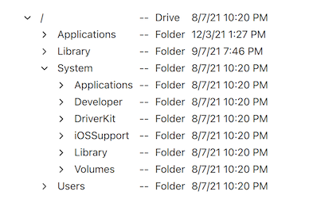

TreeViewDelegate QML Type
A delegate that can be assigned to a TreeView. More...
| Import Statement: | import QtQuick.Controls |
| Since: | Qt 6.3 |
| Inherits: |
Properties
- current : bool
- depth : int
- editing : bool
(since 6.5) - expanded : bool
- hasChildren : bool
- indentation : real
- isTreeNode : bool
- leftMargin : real
- rightMargin : real
- selected : bool
- treeView : TreeView
Detailed Description

A TreeViewDelegate is a delegate that can be assigned to the delegate property of a TreeView. It renders the tree, as well as the other columns, in the view using the application style.
TreeView { anchors.fill: parent delegate: TreeViewDelegate {} // The model needs to be a QAbstractItemModel // model: yourTreeModel }
TreeViewDelegate inherits ItemDelegate, which means that it's composed of three items: a background, a contentItem, and an indicator. TreeViewDelegate takes care of indenting the contentItem and the indicator according their location in the tree. The indicator will only be visible if the delegate item is inside the tree column, and renders a model item with children.
If you change the indicator, it will no longer be indented by default. Instead you need to indent it yourself by setting the x position of the indicator, taking the depth and indentation into account. Below is an example of how to do that:
TreeViewDelegate { indicator: Item { x: leftMargin + (depth * indentation) } }
The position of the contentItem is controlled with padding. This means that you can change the contentItem without dealing with indentation. But it also means that you should avoid changing padding to something else, as that will remove the indentation. The space to the left of the indicator is instead controlled with leftMargin. The space between the indicator and the contentItem is controlled with spacing. And the space to the right of the contentItem is controlled with rightMargin.
Interacting with pointers
TreeViewDelegate inherits ItemDelegate. This means that it will emit signals such as clicked when the user clicks on the delegate. If needed, you could connect to that signal to implement application specific functionality, in addition to the default expand/collapse behavior (and even set pointerNavigationEnabled to false, to disable the default behavior as well).
But the ItemDelegate API does not give you information about the position of the click, or which modifiers are being held. If this is needed, a better approach would be to use pointer handlers, for example:
TreeView { id: treeView delegate: TreeViewDelegate { TapHandler { acceptedButtons: Qt.RightButton onTapped: someContextMenu.open() } TapHandler { acceptedModifiers: Qt.ControlModifier onTapped: { if (treeView.isExpanded(row)) treeView.collapseRecursively(row) else treeView.expandRecursively(row) } } } }
Note: If you want to disable the default behavior that occurs when the user clicks on the delegate (like changing the current index), you can set pointerNavigationEnabled to false.
Editing nodes in the tree
TreeViewDelegate has a default edit delegate assigned. If TreeView has edit triggers set, and the model has support for editing model items, then the user can activate any of the edit triggers to edit the text of the current tree node.
The default edit delegate will try to use the Qt.EditRole to read and write data to the model. If QAbstractItemModel::data() returns an empty string for this role, then Qt.DisplayRole will be used instead.
You can always assign your own custom edit delegate to TableView.editDelegate if you have needs outside what the default edit delegate offers.
See also TreeView.
Property Documentation
current : bool |
This property holds if the delegate represent the current index in the selection model.
depth : int |
This property holds the depth of the model item drawn by the delegate. The depth of a model item is the same as the number of ancestors it has in the model.
editing : bool |
This property holds if the delegate is being edited.
This property was introduced in Qt 6.5.
expanded : bool |
This property is true if the model item drawn by the delegate is expanded in the view.
hasChildren : bool |
This property is true if the model item drawn by the delegate has children in the model.
indentation : real |
This property holds the space a child is indented horizontally relative to its parent.
isTreeNode : bool |
This property is true if the delegate item draws a node in the tree. Only one column in the view will be used to draw the tree, and therefore, only delegate items in that column will have this property set to true.
A node in the tree is indented according to its depth, and show an indicator if hasChildren is true. Delegate items in other columns will have this property set to false.
leftMargin : real |
This property holds the space between the left edge of the view and the left edge of the indicator (in addition to indentation). If no indicator is visible, the space will be between the left edge of the view and the left edge of the contentItem.
See also rightMargin, indentation, and spacing.
rightMargin : real |
This property holds the space between the right edge of the view and the right edge of the contentItem.
See also leftMargin, indentation, and spacing.
selected : bool |
This property holds if the delegate represent a selected index in the selection model.